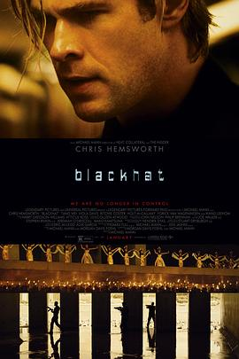
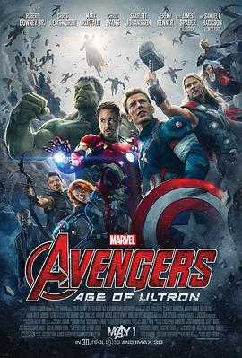
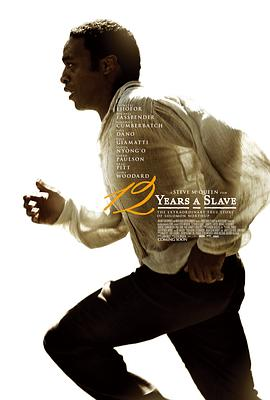
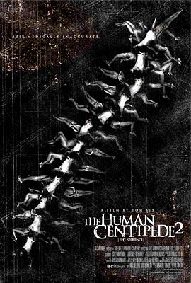
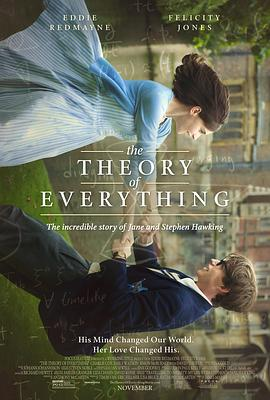

2015-06-28 16:41:57
豆瓣原页
转发日记 使用 delegate 将 shadowsocks 的 socks5 转接为 http 代理
其实开启完毕之后有个提示：<DeleGate/9.9.13> [32257] -P8080 READY
然后停止只需要kill 32257就可以了，省能量 _(:з」∠)_
顺便弄了个玩具：https://douc.cc/1iovEg
2015-06-19 23:25:49
豆瓣原页

看过 骇客交锋 / Blackhat ★★★★☆
为什么打四分？计算机指令的严谨性非常高！不像国内战狼和其他所有涉及到计算机指令的电影（例如：左耳那无语的MFC），指令完全扯淡占空间。就凭拍电影这个职业素养，一定要给4分。剧情一般，演员不错哈~
2015-06-14 21:57:19
豆瓣原页
写了关于 CROSS†CHANNEL 的攻略 噗，搬运一下组里用来做测试的攻略吧 - CROSS†CHANNEL汉化版攻略
2015-06-07 09:47:01
豆瓣原页
看过 十字路口 / クロスロード ★★★★★
今天高考，我竟然在看这个，哈哈，真的好燃啊，本来心情不好的一下子燃起来了！新海诚真棒，2分钟的精髓！
2015-05-26 20:10:39
豆瓣原页
看过 明日世界 / Tomorrowland ★★★☆☆
脑洞大开，未来世界的4声道立体音效真不错，但是平铺直叙的对话太多，开始部分的未解谜团太多，看的很累，一直是疑惑。到还剩半个小时的时候才草草结尾，可以更精彩的！（和Y&Y的室友）
2015-05-14 20:30:32
豆瓣原页
看过 比悲伤更悲伤的故事 / 슬픔보다 더 슬픈 이야기 ★★★★☆
前面白开水，后面泪人，虽然有很多地方感觉没说完，但是足够了，不同的视角、不同的心声，前后对比，十分泪人！
2015-05-12 21:07:39
豆瓣原页

看过 复仇者联盟2：奥创纪元 / Avengers: Age of Ultron ★★★☆☆
不够劲爆啊，期待值过高。3D技术也不好，帧数低的晃眼，焦距也不是全焦的，即使戴了3D眼镜也只能对准镜头对焦的地方 _(:3」∠)_ 这都不是问题，问题是剧情有点牵强啊，为什么救世主要加入Avengers啊，各种想吐槽的地方 >3<
2015-04-30 18:31:48
豆瓣原页
看过 我的早更女友 ★★★★☆
就冲着郭在容和《假如爱有天意》，感动的不行！Y
2015-04-26 22:10:13
豆瓣原页
看过 何以笙箫默 ★★★★☆
和杨同学一起看的第三场电影~我没看过电视剧，但是我觉得这个故事真的很不错，很喜欢！演员其实也不是大家说的那么烂，毕竟没有看过电视剧，先入为主嘛~
2015-04-25 21:07:13
豆瓣原页
看过 万物生长 ★★★☆☆
和Y同学一起看的 _(:з」∠)_ 巧的是她室友不约而同买了一起的票！尴尬 _(:з」∠)_
2015-04-12 22:28:46
豆瓣原页

看过 为奴十二年 / 12 Years a Slave ★★★★☆
非常感染人……
2015-04-11 22:16:14
豆瓣原页
看过 王牌特工：特工学院 / Kingsman: The Secret Service ★★★★☆
和Y同学一起看的 _(:з」∠)_ 电影不错
2015-03-15 13:51:56
豆瓣原页

看过 人体蜈蚣2 / The Human Centipede II (Full Sequence) ★★☆☆☆
我幼小的心灵受到了极大的震撼！Disgusting!!!
2015-03-02 12:54:28
豆瓣原页

看过 万物理论 / The Theory of Everything ★★★★★
这部传记作品论剧情和音乐真的是太棒了，非常感动！
2015-03-01 20:55:44
豆瓣原页
看过 模仿游戏 / The Imitation Game ★★★★☆
很精彩，很刺激，很有激情！
2015-03-01 18:48:16
豆瓣原页
看过 狼图腾 ★★★★☆
狼演的真好！